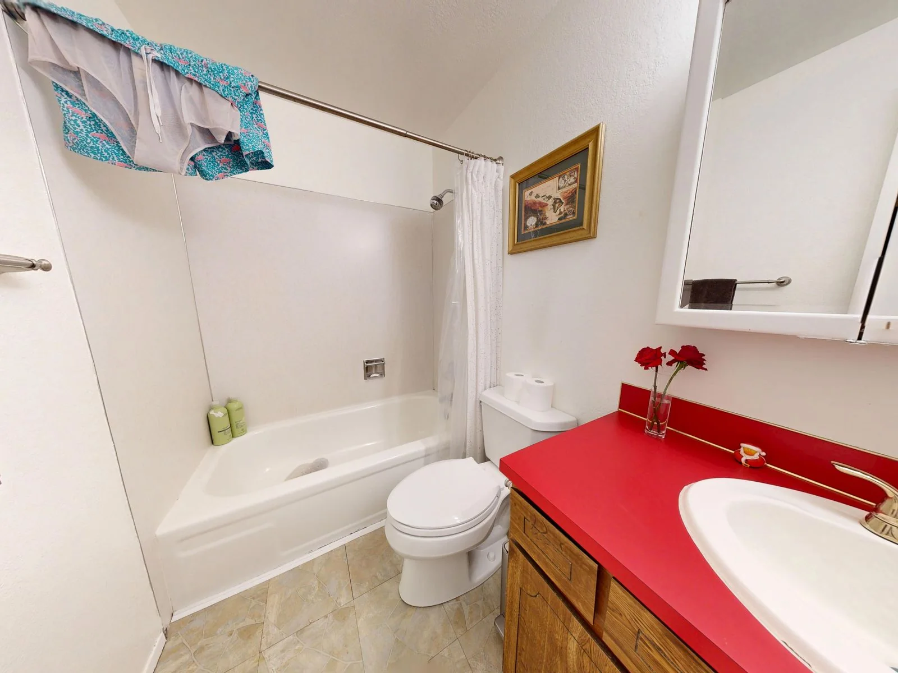
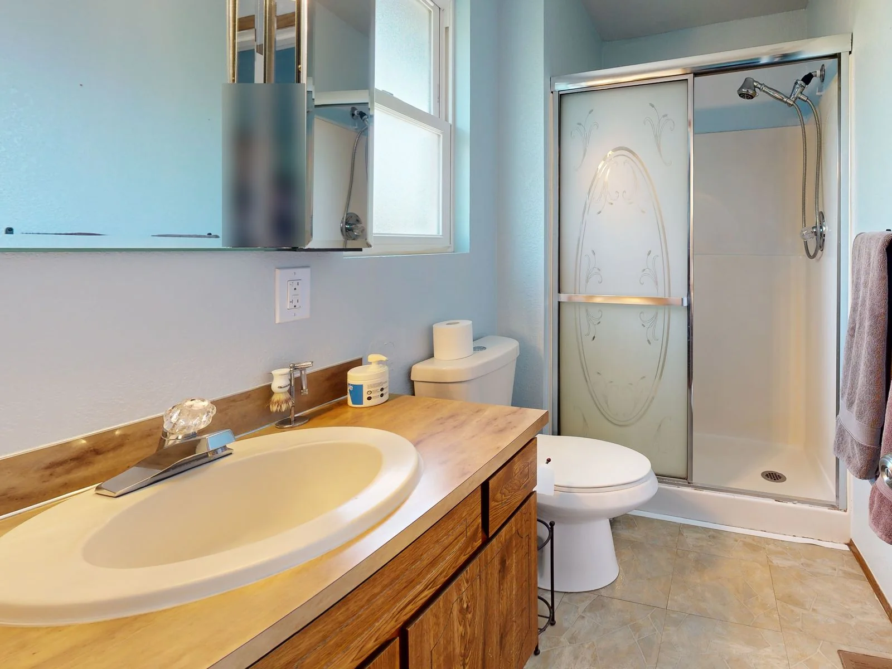

Reconstructed from installation photos · Dimensions and fixture positions are approximate.
Drag to turn · Scroll or pinch to zoom · Arrow keys to rotate
About this view
From the doorway, follow the single slope toward the narrow left-hand drain. The round showerhead sits high on the left wall behind the fixed glass.
The doorway photograph shows the recess in the left shower wall, the vanity, and the toilet. Fixture dimensions, plumbing locations, clearances and the floor pitch are estimated.
The homeowner wanted to recognize the same house in all three bathrooms. We carried white subway tile and wood vanities from floor to floor. A new drain shaped the basement shower, the guest bath kept its tub, and the primary shower gained a corner seat.
Basement bath · A single slope to the left-hand drain
Cutting the slab for a new drain gave us a choice about the floor. We ran the drain front to back on the left so the large rectangular tiles could fall toward it in a single plane.
Blender reconstructionProject photograph
Follow the drain toward the back of the shower, then look up on the same side. A short angled arm carries the round showerhead. The valve is across the shower on the right.
The family wanted an alcove tub. A sliding glass door keeps the opening over the apron and leaves the floor beside the vanity clear.
Blender reconstructionProject photograph
Look along the round upper rail. Two exposed rollers carry the sliding glass. Below the right end of the rail, the angled showerhead sits above the valve and tub spout.
Primary bath · A corner seat and a left-hand drain
A triangular corner bench leaves the center of the shower open. The drain runs front to back on the left, across from the seat.
Blender reconstructionProject photograph
The frosted window and angled showerhead mark the left side of the room. Through the glass, the long drain is visible just beyond the toilet. The niche sits above the grab rail on the back wall.
Stan scanned the rooms. The homeowner set the design rules with Austin, Stan and Angelo. DuetRight developed the details and built all three bathrooms.
Walking the rooms together
Stan captured all three bathrooms with a Matterport camera. Back at the table, the homeowner went through the scan with Austin, Stan and Angelo. He chose a small set of rules that could travel between rooms. White subway tile and off-white walls would leave room for color in towels and art. The vanities would have storage. Flat illuminated mirrors would sit above them.
He also wanted grab bars and exhaust fans in all three rooms. The grab bars needed solid blocking behind the walls. The fan ducts needed a route outdoors. We could settle those details while the framing was visible, well before the rooms started looking alike.
A basement shower starts with the slab
Moving the laundry and water heater had freed up a corner of the basement, but there was no shower drain in the concrete. The floor selection helped settle where to cut. The homeowner wanted 12-by-24-inch tile. A linear drain running front to back on the left let those rectangles follow a single slope across the shower floor.
We cut the slab, formed the pan and gave it a 24-hour flood test before tile went down. A fixed glass panel leaves the wall and grab bar visible from the doorway. The old window opening in the shower wall was framed in. Where there used to be a pedestal sink, a quartz-topped cabinet now provides storage below the mirror.
The basement drain runs front to back on the left, below the angled showerhead.
A tub upstairs and a bench in the primary
In the guest room the family wanted to keep the option of taking a bath. A new alcove tub stayed in that footprint, with a tiled niche and semi-frameless sliding glass. Two exposed rollers ride the round upper rail over the tub. The showerhead, valve and spout are on the right. White subway tile wraps the tub, and a wood vanity picks up the palette from the basement. The two rooms share materials while serving different routines.
The primary bath gained a walk-in shower, a bench and a recessed niche. From the doorway, the round showerhead and long drain are on the left, opposite the bench. We flood-tested that pan as well. Its new exhaust fan vents outdoors, an important change in a room that had previously had no fan at all.
Two exposed rollers carry the sliding guest-bath glass on its round upper rail.
A detail the homeowner caught
A patio door was part of the same commission. Our rendering showed the operable panel on the right. We installed a unit that opened on the left, away from the existing switches and the owner's usual route outdoors. He asked us to hold the trim. We replaced the unit at our expense while the opening was still accessible. Door handing, swing and rough-opening dimensions now have their own place in our quotes.
Before & after
See what changed.
Move the divider to compare the two photographs.
BeforeAfter↔
Basement bath, down to the studsOriginals BeforeAfter

BeforeAfter↔
Guest bath, red laminate to glass sliderOriginals BeforeAfter

BeforeAfter↔
Master bath, framed door to walk-inOriginals BeforeAfter
Blender detail study
Basement shower and left-hand linear drain.
Reconstruction from project records · November 2026
The basement shower in motion
Five-second Blender camera study · Basement shower and left-hand linear drain
From the site
The project in photographs.
The basement bath before: open walls, a pedestal sink and no place for a shower drain.The primary has a left-hand linear drain and a corner seat on the right.